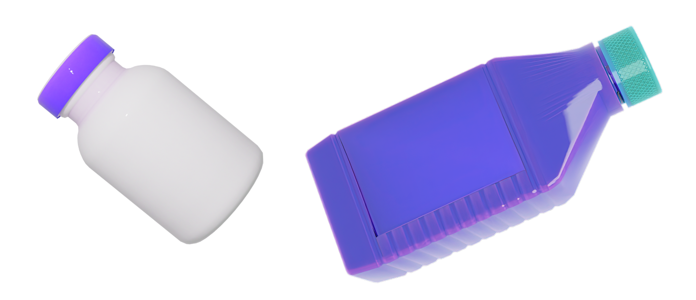

HDPE
Высокоплотный полиэтилен (ВПП) играет важную роль в осознанном потреблении благодаря своим уникальным свойствам. ВПП является прочным, гибким и легким материалом, который может использоваться в различных сферах, включая упаковку, строительство и медицину. Его прочность позволяет снизить использование материалов, а его легкость помогает сократить энергозатраты при транспортировке. Кроме того, ВПП является перерабатываемым материалом, что способствует уменьшению отходов и поддерживает циклы устойчивого использования ресурсов.
Прочный пластик широкого использования. Устойчив к химическим воздействиям.
 Чем заменить?
Чем заменить?Высокоплотные полиэтилен стоит заменять многоразовыми или биологическими альтернативами. Например, можно использовать восковые салфетки или авоськи.
 Что к нему относится?В быту человека задействовано очень большое количество вещей из полиэтилена:
Мешки для мусора, стрейч плёнка, пакеты.
Скотч.
Многие ёмкости: бутылки, банки, лотки из-под фруктов и овощей, ящики, канистры, горшки.
Газовые и канализационные трубы.